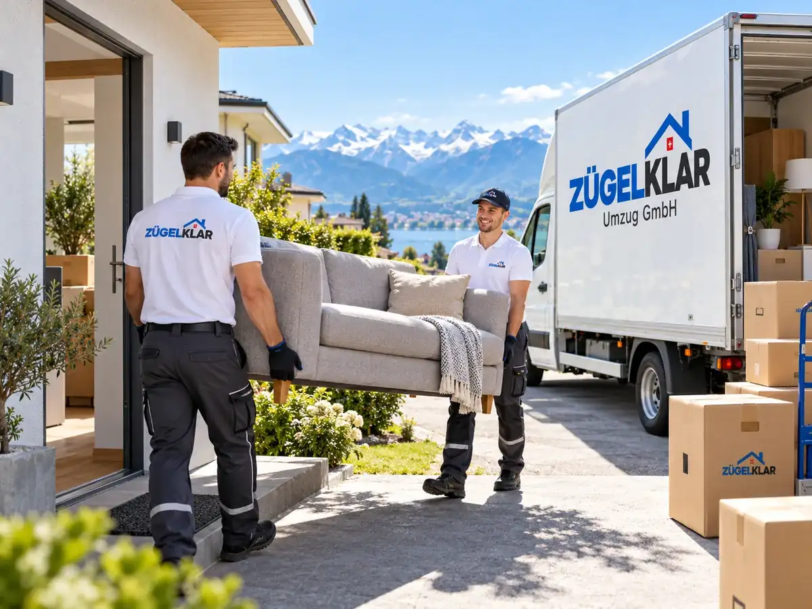

Kleinumzug – für Studio, WG-Zimmer und einzelne Stücke
Nicht jeder Umzug braucht einen ganzen Tag. Für ein Studio, ein WG-Zimmer oder ein einzelnes Möbelstück plant ZÜGELKLAR einen kompakten Einsatz – mit klarer Offerte, oft nach Stundenpreis, und einer Einschätzung anhand von Fotos per WhatsApp.

SymbolbildWofür sich ein Kleinumzug eignet
Ein Kleinumzug ist sinnvoll, wenn das Volumen überschaubar ist, Sie aber nicht selbst einen Transporter mieten, Helfer organisieren und schwere Stücke durchs Treppenhaus tragen möchten. Ein kleines Team übernimmt Tragen, Transport und auf Wunsch den Aufbau.
Auch Studierende, Wochenaufenthalterinnen und Wochenaufenthalter oder Personen, die nach einer Trennung nur einen Teil des Hausrats mitnehmen, nutzen einen Kleinumzug. Entscheidend ist, dass Umfang und Termin vorab klar sind.
- Studio oder 1-Zimmer-Wohnung
- WG-Zimmer beim Ein- oder Auszug
- Einzelne Möbelstücke wie Sofa, Schrank, Bett oder Kommode
- Abholung eines gekauften Möbels bei einer Privatperson oder im Geschäft
- Teilumzug, etwa einzelne Räume oder Möbel in ein Lager
Stundenpreis oder Festpreis
Bei kleinen Aufträgen passt der Stundenpreis oft gut: Sie bezahlen die vereinbarten Einsatzzeiten und, je nach Offerte, An- und Rückfahrt. Ist der Umfang klar abgegrenzt, ist auch ein Festpreis möglich. Welche Variante sinnvoll ist, empfehlen wir Ihnen in der schriftlichen Offerte.
Wie lange ein Kleinumzug dauert, hängt weniger von der Anzahl Kartons ab als von Stockwerk, Lift und Trageweg. Diese Angaben sind deshalb für die Offerte besonders wichtig.
Kurzfristige Kleinumzüge sind möglich, sofern Kapazität verfügbar ist. Am besten fragen Sie an, sobald Ihr Termin feststeht – besonders am Monatsende sind viele Tage gefragt.
Bei einem Stundenpreis lohnt es sich, Möbel bereits vorab zu leeren und Kartons nahe beim Ausgang bereitzustellen. So bleibt die Einsatzzeit kurz und planbar.
Halteverbot und Parkplatz sind auch bei kleinen Aufträgen ein Thema: Muss das Fahrzeug weit entfernt parkieren, verlängert sich jeder Weg. Auf Wunsch organisieren wir die Bewilligung bei der Gemeinde; deren Gebühren werden separat ausgewiesen.
Fotos per WhatsApp statt Besichtigung
Für einen Kleinumzug ist eine Besichtigung vor Ort selten nötig. Schicken Sie uns Fotos der Möbel und des Treppenhauses an 079 933 31 11, dazu beide Adressen, Stockwerke und Ihren Wunschtermin. Bei einzelnen Stücken helfen ungefähre Masse.
So können wir Personal und Fahrzeug passend planen und Ihnen eine Offerte erstellen, ohne dass Sie einen Termin zu Hause freihalten müssen.
Bei schweren oder besonders empfindlichen Einzelstücken, etwa einem Tresor oder einem Klavier, teilen Sie uns das bitte ausdrücklich mit. Dafür braucht es oft mehr Personal oder zusätzliche Hilfsmittel.
Gut vorbereitet geht es schneller
Gerade beim Stundenpreis lohnt sich eine gute Vorbereitung. Je weniger am Umzugstag gesucht oder umgeplant werden muss, desto kürzer ist der Einsatz.
Wenn Sie im WG-Zimmer nur einen Teil der Möbel mitnehmen, kennzeichnen Sie diese am besten mit Klebeband. So vermeiden Sie Verwechslungen mit Gegenständen der Mitbewohnenden.
- Kartons vollständig packen, verschliessen und beschriften
- Kleinteile, Schrauben und Ladekabel in beschrifteten Beuteln sammeln
- Parkmöglichkeit vor dem Haus klären oder Halteverbot anfragen
- Mitbewohnende und Hauswart über den Termin informieren
Zusatzleistungen nach Bedarf
Auch ein kleiner Auftrag lässt sich ergänzen: Wir demontieren und montieren Betten und Schränke, vermieten Umzugskartons und Schutzmaterial und nehmen Möbel mit, die Sie nicht mehr brauchen. Für die bisherige Wohnung oder das WG-Zimmer können Sie zusätzlich die Umzugsreinigung mit Abnahmegarantie buchen.
Was enthalten ist und was Sie selbst übernehmen, steht vorab in der schriftlichen Offerte – auch bei kleinen Aufträgen.
Für kleine Aufträge gelten dieselben Grundsätze wie für grosse: ein klarer Leistungsumfang, ein Ansprechpartner und eine sorgfältige Ausführung. Ihr Kleinumzug wird nicht nebenbei erledigt, sondern als vollwertiger Einsatz geplant.
Auf Wunsch kombinieren wir mehrere kleine Transporte, zum Beispiel die Abholung eines Möbels und den Umzug Ihres Zimmers am selben Tag, sofern Route und Zeitplan das zulassen.
Häufige Fragen
Transportieren Sie auch nur ein einzelnes Möbelstück?
Ja. Senden Sie uns Fotos, ungefähre Masse und beide Adressen per WhatsApp. Wir sagen Ihnen dann, wie wir den Transport planen und welche Preisbasis sinnvoll ist.
Lohnt sich bei einem WG-Zimmer ein Stundenpreis?
Häufig ja, weil der Aufwand überschaubar ist. Entscheidend sind Stockwerk, Lift und Trageweg. Ist der Umfang klar, kann auch ein Festpreis passen.
Was muss ich bei einem Kleinumzug selbst vorbereiten?
Gepackte und beschriftete Kartons, freie Wege und eine geklärte Parkmöglichkeit verkürzen den Einsatz. Wenn Sie nicht selbst packen möchten, übernehmen wir das auf Wunsch.